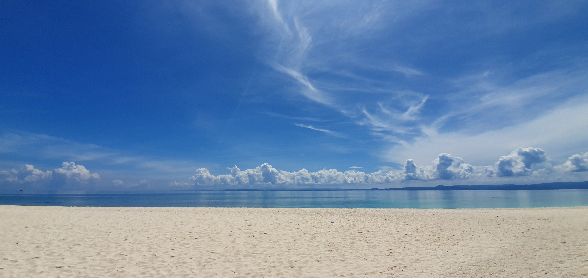
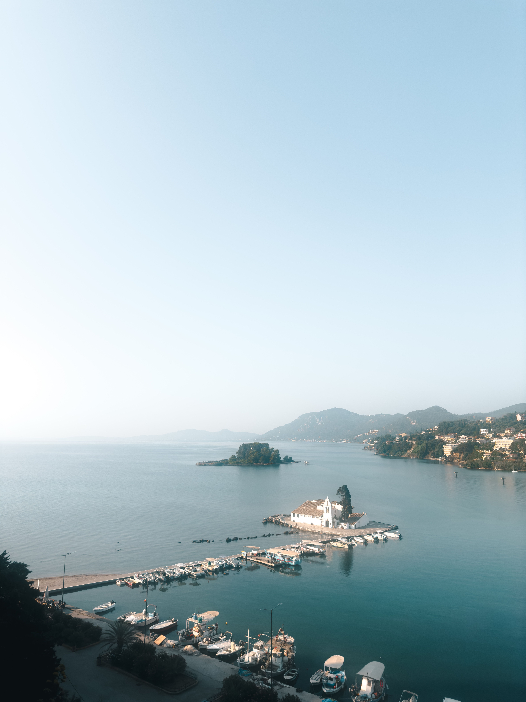

About
Taniti is a small, tropical island in the Pacific. While the island has an area of less than 500 square miles, the terrain is varied and includes both sandy and rocky beaches, a small but safe harbor, lush tropical rainforests, and a mountainous interior that includes a small, active volcano. Taniti has an indigenous population of about 20,000. Until a recent increase in tourism, most the Tanitian economy was dominated by fishing or agriculture.



Q: What outlet types are available?
A: Power outlets are 120 volts (the same as in the United States).
Q: When can I purchase Alcohol?
A: Alcohol is not allowed to be served or sold between the hours of midnight and 9:00 a.m.
Q: What is the drinking age?
A: The drinking age on Taniti is 18 and the drinking age is not strictly enforced.
Q: What is the primary language?
A: Many younger Tanitians speak fluent English. Very little English is spoken in rural areas, especially by the older residents.
Q: What medical services are available?
A: There is one hospital and several clinics. The hospital has many multilingual employees.
Q: How is the crime?
A: Violent crime is very rare on Taniti, but as tourism increases, there are more reports of pickpocketing and other petty crimes.
Q: Is there anything to plan my itenarary around?
A: Taniti enjoys a large number of national holidays, and many tourist attractions and restaurants will be closed on holidays, so visitors should plan accordingly.
Q: What currency is accepted?
A: Taniti uses the U.S. dollar as its currency, but many businesses will also accept euros and yen. Several banks facilitate currency exchange, and many businesses accept major credit cards.